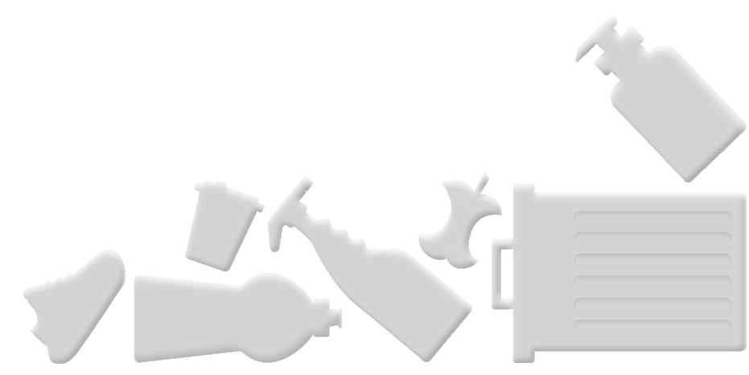
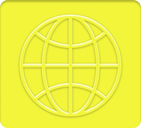
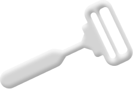
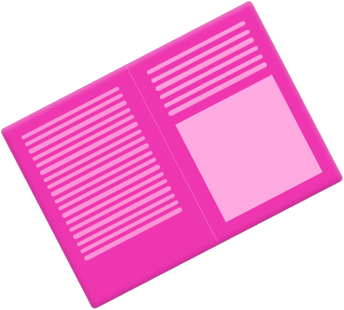
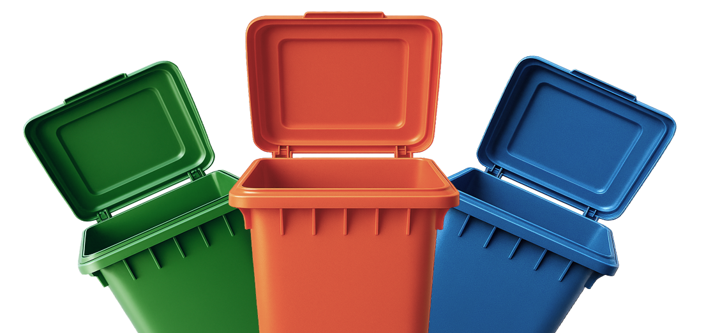

Бесконечная резня
Многоразовая стальная бритва срежет ваши лишние траты. Узнайте как...


загрязнения воздуха обходятся экономике в $ 8.1 трлн. Основной причиной являются расходы на здравоохранение









По оценкам Всемирного банка, загрязнения воздуха обходятся мировой экономике в $ 8.1 трлн ежегодно из-за падения производительности и здоровья людей

Многоразовая стальная бритва срежет ваши лишние траты. Узнайте как...
Скоро здесь появится интересная статья! Уже пишем..
Почему твердый шампунь экологичнее и выгоднее жидкого? Объясним...
Получай выгоду при стирке 30 °C. Скорее попробуй...
Скоро здесь появится интересная статья! Уже пишем..
Скоро здесь появится интересная статья! Уже пишем..
Скоро здесь появится интересная статья! Уже пишем..
Скоро здесь появится интересная статья! Уже пишем..